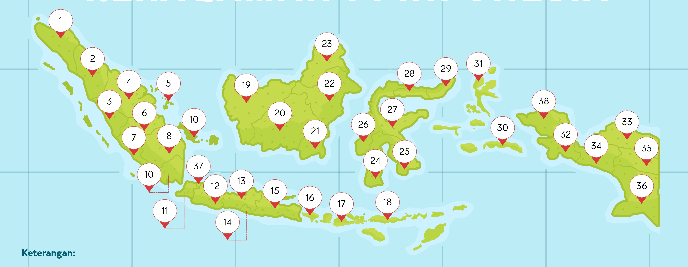

Dari Sabang sampai Merauke, dari Miangas sampai Pulau Rote. Pelajari bagaimana Indonesia menjadi satu kesatuan wilayah yang utuh — darat, laut, dan udara — melalui materi lengkap 5.000+ kata, peta interaktif, glosarium, flashcard, dan kuis seru.
Memahami hakikat negara kesatuan, dasar hukum, dan prinsip-prinsip yang menopangnya.
Negara Kesatuan Republik Indonesia (NKRI) adalah negara berdaulat yang berbentuk kesatuan dengan pemerintahan republik, di mana seluruh wilayahnya merupakan satu kesatuan yang tidak terpisahkan. Kedaulatan berada di tangan rakyat dan dilaksanakan menurut Undang-Undang Dasar. Istilah "kesatuan" mengandung makna bahwa tidak ada bagian wilayah yang memiliki status sebagai negara bagian dengan kedaulatan tersendiri seperti pada negara federal.
Dalam NKRI, pemerintah pusat memegang kedaulatan tertinggi dan mendelegasikan sebagian kewenangan kepada daerah otonom melalui mekanisme desentralisasi. Namun, kewenangan tersebut tetap dapat ditarik kembali atau diatur ulang oleh pemerintah pusat sesuai dengan kepentingan nasional dan peraturan perundang-undangan yang berlaku.
Dalam negara kesatuan (unitary state), hanya ada satu pemerintahan berdaulat yakni pemerintah pusat. Daerah otonom memperoleh kewenangan dari pusat, bukan dari konstitusi yang berdiri sendiri. Sebaliknya, dalam negara federal, negara bagian memiliki kedaulatan sendiri yang dijamin konstitusi dan tidak dapat ditarik pusat secara sepihak.
Indonesia pernah merasakan bentuk federal pada periode Republik Indonesia Serikat (RIS) tahun 1949–1950. Pengalaman itu menunjukkan bahwa bentuk federal kurang cocok dengan kondisi sosial-budaya Indonesia yang menjunjung tinggi persatuan, sehingga pada 17 Agustus 1950 Indonesia kembali ke bentuk negara kesatuan.
Pasal 1 ayat (1) UUD 1945 menegaskan bahwa negara Indonesia ialah negara kesatuan yang berbentuk republik. Pasal 25A menegaskan bahwa NKRI adalah sebuah negara kepulauan yang berciri nusantara dengan wilayah yang batas-batas dan hak-haknya ditetapkan dengan undang-undang.
Selain itu, Pasal 18 mengatur pembagian daerah dalam NKRI, sementara Pasal 33 dan 34 menegaskan bahwa bumi, air, dan kekayaan alam dikuasai negara untuk sebesar-besarnya kemakmuran rakyat. Berbagai undang-undang turunan seperti UU No. 23 Tahun 2014 tentang Pemerintahan Daerah dan UU No. 6 Tahun 1996 tentang Perairan Indonesia memperkuat kerangka hukum NKRI.
NKRI menganut prinsip desentralisasi, otonomi daerah, dan dekonsentrasi. Daerah diberikan kewenangan mengurus rumah tangganya sendiri, namun tetap dalam kerangka NKRI yang utuh dan berdaulat.
Ada tiga pilar utama kesatuan NKRI: (1) kesatuan wilayah — darat, laut, dan udara adalah satu; (2) kesatuan bangsa — semua suku, agama, dan golongan bersatu; (3) kesatuan sosial-ekonomi — pembangunan yang merata di seluruh pelosok negeri.
Sebagai negara kesatuan, NKRI memiliki beberapa karakteristik khas yang membedakannya dari negara lain. Pertama, adanya satu konstitusi nasional yakni UUD 1945 yang menjadi hukum tertinggi. Kedua, satu kepala negara dan kepala pemerintahan, yakni Presiden, yang dipilih langsung oleh rakyat.
Ketiga, adanya satu bendera (Sang Saka Merah Putih), satu bahasa persatuan (Bahasa Indonesia), satu lambang negara (Garuda Pancasila), dan satu lagu kebangsaan (Indonesia Raya). Semua ini menjadi simbol pemersatu yang mengikat seluruh rakyat dari Sabang sampai Merauke.
Bagi pelajar, memahami NKRI bukan sekadar menghafal definisi. Ini tentang menumbuhkan kesadaran bahwa setiap jengkal wilayah Indonesia adalah warisan leluhur yang harus dijaga. Bangsa Indonesia pernah mengalami penjajahan ratusan tahun, dan kemerdekaan diperoleh dengan darah serta air mata para pahlawan.
Dengan memahami NKRI, pelajar diharapkan tumbuh menjadi warga negara yang cinta tanah air, menghargai keberagaman, dan siap berkontribusi menjaga keutuhan bangsa di era digital ini.
Perjalanan panjang dari Sumpah Pemuda hingga kembali ke bentuk negara kesatuan. Klik setiap peristiwa untuk detail lengkap.
Kongres Pemuda II di Jakarta menghasilkan ikrar satu tanah air, satu bangsa, dan satu bahasa: Indonesia.
Latar belakang: Sebelum 1928, perjuangan kemerdekaan bersifat kedaerahan — ada perjuangan Jawa, Sumatera, Sulawesi, dan daerah lainnya yang berjalan sendiri-sendiri. Kaum muda terpelajar menyadari bahwa perjuangan terpisah mudah dipatahkan penjajah.
Tokoh penting: Mohammad Yamin, Soegondo Djojopoespito, WR Supratman, dan lainnya. WR Supratman pertama kali memperdengarkan lagu Indonesia Raya dengan biola di depan kongres.
Makna: Sumpah Pemuda menjadi tonggak kesadaran nasional bahwa wilayah Nusantara adalah satu kesatuan tanah air yang harus diperjuangkan bersama. Ikrar ini menjadi fondasi ideologis bagi terbentuknya NKRI nanti.
Indonesia memproklamasikan kemerdekaannya di Jalan Pegangsaan Timur 56, Jakarta.
Peristiwa: Setelah Jepang menyerah kepada Sekutu pada 15 Agustus 1945, terjadi kekosongan kekuasaan. Golongan muda mendesak Soekarno-Hatta untuk segera memproklamasikan kemerdekaan. Peristiwa Rengasdengklok menjadi titik krusial.
Isi proklamasi: Ditulis oleh Soekarno, disempurnakan oleh Mohammad Hatta dan Ahmad Soebardjo, diketik oleh Sayuti Melik. Ditandatangani Soekarno-Hatta atas nama bangsa Indonesia.
Makna: Dalam Pembukaan UUD 1945 ditegaskan bahwa kemerdekaan adalah hak segala bangsa. Indonesia menyatakan diri sebagai negara kesatuan yang merdeka dan berdaulat, terlepas dari penjajahan.
Perjuangan mempertahankan kemerdekaan dari agresi Belanda yang ingin kembali menjajah.
Peristiwa penting: Pertempuran Surabaya (10 November 1945), Bandung Lautan Api, Agresi Militer Belanda I (1947) dan II (1948), Serangan Umum 1 Maret 1949 di Yogyakarta.
Diplomasi: Perjanjian Linggarjati (1946), Renville (1948), Roem-Royen (1949), dan Konferensi Meja Bundar (KMB) di Den Haag (1949).
Makna: Menunjukkan bahwa wilayah NKRI diperjuangkan dengan darah dan air mata. Setiap jengkal wilayah memiliki nilai sejarah perjuangan.
Hasil KMB memaksa Indonesia berubah menjadi negara federal bernama RIS.
Struktur RIS: Terdiri dari 16 negara bagian, salah satunya Republik Indonesia yang berpusat di Yogyakarta. Soekarno menjadi Presiden RIS, Hatta menjadi Perdana Menteri.
Masalah: Bentuk federal dianggap tidak sesuai dengan cita-cita proklamasi karena memecah kesatuan bangsa. Banyak negara bagian yang kemudian menggabungkan diri ke Republik Indonesia.
Kesimpulan: Rakyat Indonesia menginginkan bentuk kesatuan yang mencerminkan Sumpah Pemuda dan Proklamasi.
RIS dibubarkan dan Indonesia kembali menjadi Negara Kesatuan Republik Indonesia.
Peristiwa: Pada 17 Agustus 1950, RIS resmi dibubarkan dan Indonesia kembali ke bentuk negara kesatuan dengan UUD Sementara 1950. Soekarno kembali menjadi Presiden NKRI.
Makna: Sejak saat itu, bentuk negara kesatuan dipertahankan hingga kini. Semua upaya memecah NKRI — seperti pemberontakan RMS, PRRI/Permesta, DI/TII, dan GAM — berhasil diatasi.
Perdana Menteri Djuanda mendeklarasikan bahwa laut Indonesia adalah satu kesatuan.
Latar belakang: Sebelum 1957, wilayah laut Indonesia mengikuti Territoriale Zee en Maritieme Kringen Ordonnantie warisan Belanda yang hanya menghitung 3 mil laut dari garis pantai setiap pulau. Akibatnya, laut antarpulau dianggap laut bebas dan kapal asing bisa leluasa.
Deklarasi: Djuanda Kartawidjaja menyatakan bahwa Indonesia adalah negara kepulauan yang utuh, dan laut antarpulau adalah bagian wilayah kedaulatan NKRI. Prinsip ini dikenal sebagai asas negara kepulauan (archipelagic state).
Hasil: Deklarasi ini menjadi dasar perjuangan Indonesia di forum internasional hingga akhirnya diakui dalam UNCLOS 1982.
Indonesia menandatangani konvensi yang mengakui prinsip negara kepulauan.
Peristiwa: Di Montego Bay, Jamaika, PBB mengadopsi United Nations Convention on the Law of the Sea (UNCLOS). Konvensi ini mengakui prinsip negara kepulauan yang diperjuangkan Indonesia sejak Deklarasi Djuanda.
Ratifikasi: Indonesia meratifikasi UNCLOS melalui UU No. 17 Tahun 1985. Luas wilayah laut Indonesia bertambah dari sekitar 2 juta km² menjadi lebih dari 6 juta km².
Makna: Kemenangan diplomatik besar bagi NKRI, memperkokoh posisi Indonesia sebagai negara maritim.
Reformasi membawa perubahan besar dengan diterapkannya otonomi daerah.
Latar belakang: Krisis ekonomi 1997 dan tuntutan reformasi menyebabkan Soeharto mengundurkan diri pada 21 Mei 1998. Muncul tuntutan desentralisasi dan otonomi daerah.
Kebijakan: UU No. 22 Tahun 1999 (kemudian direvisi menjadi UU No. 23 Tahun 2014 dan UU No. 9 Tahun 2015) tentang Pemerintahan Daerah. Provinsi dan kabupaten/kota mendapat kewenangan lebih luas.
Pemekaran wilayah: Sejak 1999, banyak provinsi dan kabupaten baru dibentuk untuk mempercepat pembangunan dan mendekatkan pelayanan. Pada 2022, empat provinsi baru di Papua dibentuk: Papua Selatan, Papua Tengah, Papua Pegunungan, dan Papua Barat Daya — sehingga total menjadi 38 provinsi.
Indonesia adalah negara kepulauan terbesar di dunia dengan tiga dimensi wilayah kedaulatan.
Wilayah daratan Indonesia mencakup seluruh pulau, tanah, dan daratan yang berada di bawah kedaulatan NKRI. Luas daratan Indonesia sekitar 5,18 juta km² yang tersebar pada lebih dari 17.000 pulau besar dan kecil. Dari jumlah tersebut, sekitar 6.000 pulau berpenghuni dan sisanya masih kosong atau hanya digunakan untuk kepentingan tertentu.
Wilayah daratan meliputi pula perairan darat seperti sungai, danau, rawa, serta tanah di bawah permukaan hingga kedalaman tertentu. Batas daratan antarnegara biasanya ditentukan melalui perjanjian bilateral dan penanda batas fisik seperti patok, tembok, atau sungai.
Indonesia memiliki lebih dari 500 sungai besar dan kecil. Beberapa sungai terpanjang antara lain Sungai Kapuas (Kalimantan, ±1.143 km), Sungai Mahakam (Kalimantan, ±980 km), Sungai Barito (Kalimantan, ±909 km), dan Sungai Musi (Sumatera, ±750 km). Danau terbesar adalah Danau Toba di Sumatera Utara (±1.130 km²), sementara Danau Sentani di Papua terkenal akan keindahannya.
Beberapa pulau besar yang menjadi bagian utama wilayah daratan NKRI antara lain:
Selain pulau-pulau besar, terdapat pula gugusan pulau kecil yang tidak kalah penting, seperti Kepulauan Natuna, Kepulauan Maluku, Kepulauan Riau, Kepulauan Bangka Belitung, dan Kepulauan Nusa Tenggara. Setiap pulau memiliki karakteristik budaya dan ekosistem yang unik.
Wilayah laut Indonesia sangat luas, mencapai sekitar 6,4 juta km² dengan garis pantai terpanjang kedua di dunia (± 99.000 km). Sebagai negara kepulauan, laut bukan pemisah, melainkan pemersatu antarpulau. Konsep ini menjadi inti dari Wawasan Nusantara.
Berdasarkan UNCLOS 1982 yang diratifikasi Indonesia melalui UU No. 17 Tahun 1985, wilayah laut NKRI dibagi menjadi beberapa zona:
Indonesia juga memiliki beberapa selat strategis yang menjadi jalur pelayaran internasional, seperti Selat Malaka, Selat Sunda, Selat Lombok, Selat Makassar, dan Selat Ombai-Wetar. Selat-selat ini menjadi jalur ALKI (Alur Laut Kepulauan Indonesia) yang diakui dunia.
Kekayaan laut Indonesia meliputi berbagai jenis ikan, terumbu karang, rumput laut, minyak bumi, gas alam, dan mineral. Potensi ekonomi laut Indonesia diperkirakan mencapai triliunan rupiah per tahun, menjadikan sektor kelautan sebagai pilar penting pembangunan nasional.
Wilayah udara NKRI adalah ruang udara yang berada di atas wilayah daratan dan lautan Indonesia. Indonesia memiliki kedaulatan penuh atas ruang udaranya, sesuai dengan Konvensi Chicago 1944 dan UU No. 1 Tahun 2009 tentang Penerbangan.
Aturan umum yang berlaku (teori dan praktik internasional):
Indonesia memiliki Flight Information Region (FIR) yang mencakup wilayah udara di atas daratan, laut teritorial, dan sebagian ruang udara di atas perairan internasional. Pengelolaan ruang udara Indonesia dilakukan oleh AirNav Indonesia, sementara TNI AU bertugas menjaga kedaulatan udara NKRI.
Beberapa pangkalan udara utama TNI AU antara lain Lanud Halim Perdanakusuma (Jakarta), Lanud Iswahjudi (Madiun), Lanud Sultan Hasanuddin (Makassar), dan Lanud Manuhua (Biak). Pangkalan-pangkalan ini menjadi garda terdepan menjaga kedaulatan udara Indonesia dari berbagai ancaman.
Wilayah ekstrateritorial adalah wilayah yang secara hukum dianggap sebagai wilayah suatu negara, meskipun secara fisik berada di luar batas geografisnya. Prinsip ini diakui dalam hukum internasional untuk melindungi kepentingan negara dan warga negaranya di luar negeri.
Contoh wilayah ekstrateritorial Indonesia:
Prinsip ekstrateritorial memberikan kekebalan dan hak hukum tertentu terhadap aset dan warga negara yang berada di wilayah tersebut. Namun, kekebalan ini tidak bersifat absolut — tetap ada batasan yang diatur oleh hukum internasional dan perjanjian bilateral.
Wawasan Nusantara adalah cara pandang bangsa Indonesia terhadap diri dan wilayahnya sebagai satu kesatuan yang utuh dan menyeluruh. Konsep ini lahir dari kesadaran bahwa Indonesia adalah negara kepulauan yang terdiri dari ribuan pulau, namun tetap satu dalam kebinekaan.
Wawasan Nusantara mencakup beberapa aspek kesatuan:
Wawasan Nusantara menjadi landasan bagi kebijakan pembangunan nasional, termasuk pembangunan daerah tertinggal, perbatasan, dan pulau-pulau terluar. Konsep ini juga menjadi dasar bagi Indonesia untuk menegaskan kedaulatannya atas wilayah laut dan udara.
Klik setiap kartu untuk melihat detail batas wilayah di empat arah mata angin.
Darat: Malaysia (Sabah & Sarawak), Papua Nugini (sebelah utara
Papua).
Laut: Selat Malaka, Laut Natuna, Laut Sulawesi, Samudra Pasifik,
dan Selat Singapura.
Negara tetangga: Malaysia, Singapura, Vietnam, Filipina, Thailand,
dan Palau.
Titik terluar: Pulau Miangas (Sulawesi Utara).
Laut: Samudra Hindia dan Laut Timor.
Negara tetangga: Australia dan Timor Leste.
Catatan: Tidak ada batas darat di sebelah selatan karena seluruhnya
berupa laut terbuka.
Titik terluar: Pulau Rote (Nusa Tenggara Timur).
Darat: Papua Nugini.
Laut: Samudra Pasifik, Laut Arafuru, dan Laut Banda.
Negara tetangga: Papua Nugini, Palau, dan Timor Leste.
Titik terluar: Pulau Merauke (Papua).
Laut: Samudra Hindia dan Selat Malaka.
Negara tetangga: India (Pulau Nicobar) dan Malaysia.
Catatan: Pulau Rondo di Aceh adalah titik paling barat NKRI.
Indonesia memiliki empat titik terluar yang menjadi penanda kedaulatan wilayah NKRI:
Pulau Miangas, Sulawesi Utara (3°17′ LU)
Pulau Rote, Nusa Tenggara Timur (11°S)
Pulau Rondo, Aceh (95°BT)
Pulau Merauke, Papua (141°BT)
Panjang wilayah NKRI dari barat ke timur sekitar 5.120 km (setara jarak London–Baghdad), sedangkan lebar dari utara ke selatan sekitar 1.888 km. Rentang ini menjadikan Indonesia sebagai salah satu negara dengan wilayah terluas di dunia.
Bagaimana Indonesia memperjuangkan wilayah lautnya hingga diakui dunia.
Sebelum 1957, wilayah laut Indonesia mengikuti Territoriale Zee en Maritieme Kringen Ordonnantie warisan Belanda yang hanya menghitung 3 mil laut dari garis pantai setiap pulau. Akibatnya, laut antarpulau dianggap sebagai laut bebas dan kapal asing bisa leluasa melintas.
Pada 13 Desember 1957, Perdana Menteri Djuanda Kartawidjaja mendeklarasikan bahwa Indonesia adalah negara kepulauan yang utuh, dan laut antarpulau merupakan bagian dari wilayah kedaulatan NKRI. Prinsip ini dikenal sebagai asas negara kepulauan (archipelagic state).
Deklarasi ini menuai protes dari beberapa negara maritim besar, namun Indonesia terus memperjuangkannya di forum internasional. Perjuangan ini membuahkan hasil 25 tahun kemudian melalui UNCLOS 1982.
Perjuangan Indonesia berbuah pada Konvensi Hukum Laut PBB (UNCLOS) 1982 di Montego Bay, Jamaika. Konvensi ini mengakui prinsip negara kepulauan dan mengatur pembagian wilayah laut secara internasional.
Indonesia meratifikasi UNCLOS melalui UU No. 17 Tahun 1985, sehingga luas wilayah laut Indonesia bertambah dari sekitar 2 juta km² menjadi lebih dari 6 juta km². Ini adalah kemenangan diplomatik besar bagi NKRI.
UNCLOS juga mengatur tentang Alur Laut Kepulauan Indonesia (ALKI) — jalur pelayaran internasional yang melewati perairan Indonesia. Ada tiga ALKI utama: ALKI I (Selat Malaka–Selat Sunda), ALKI II (Selat Lombok–Selat Makassar), dan ALKI III (Laut Sawu–Selat Ombai–Laut Banda).
ZEE adalah zona selebar 200 mil laut dari garis pangkal, di mana Indonesia memiliki hak eksklusif untuk mengeksplorasi dan memanfaatkan sumber daya alam, baik hayati maupun non-hayati.
Di ZEE, kapal asing tidak boleh menangkap ikan atau mengambil sumber daya tanpa izin. Namun, negara lain masih memiliki kebebasan pelayaran dan pemasangan kabel bawah laut. Pengaturan ZEE diatur dalam UU No. 5 Tahun 1983.
Potensi ZEE Indonesia sangat besar: diperkirakan mencapai US$ 1,2 triliun per tahun dari sektor perikanan, migas, dan mineral. Sayangnya, masih sering terjadi pencurian ikan (illegal fishing) oleh kapal asing, sehingga pengawasan perlu terus ditingkatkan.
Untuk menjaga wilayah lautnya, Indonesia memiliki beberapa institusi dan kebijakan:
Selain itu, Indonesia aktif dalam kerja sama maritim regional seperti ASEAN Maritime Forum, dan menjadi tuan rumah berbagai latihan militer gabungan bersama negara sahabat.
Peta 38 provinsi Indonesia beserta nomor penanda wilayah. Klik peta untuk memperbesar, atau klik nomor pada daftar keterangan.

💡 Angka 1–38 pada peta sesuai dengan daftar Keterangan di atas. Klik salah satu nomor untuk menampilkan nama provinsi dan wilayahnya.
Indonesia terbagi menjadi 38 provinsi yang tersebar dari Aceh hingga Papua. Gunakan pencarian & filter di bawah.
Wilayah NKRI dibagi menjadi beberapa tingkatan pemerintahan: provinsi, kabupaten/kota, kecamatan, dan desa/kelurahan. Setiap provinsi dipimpin oleh gubernur, kabupaten oleh bupati, dan kota oleh wali kota. Pembagian ini bertujuan agar pelayanan publik dan pembangunan lebih merata hingga ke pelosok negeri.
Beberapa provinsi memiliki status khusus: Daerah Istimewa Yogyakarta (dipimpin Sultan), Nanggroe Aceh Darussalam (dengan syariat Islam), Papua dan Papua Barat (dengan otonomi khusus), serta DKI Jakarta sebagai daerah khusus ibu kota negara (sebelum pindah ke IKN Nusantara).
Sejak reformasi 1998, terjadi pemekaran wilayah yang signifikan. Dari 26 provinsi pada 1998 menjadi 38 provinsi pada 2022. Tujuan pemekaran adalah mempercepat pembangunan, mendekatkan pelayanan publik, dan meningkatkan kesejahteraan masyarakat di daerah.
*Jumlah provinsi di Indonesia kini 38 setelah pemekaran wilayah Papua pada tahun 2022.
Kumpulan istilah penting yang perlu kamu kuasai saat mempelajari wilayah NKRI.
Klik kartu untuk membalik dan melihat jawaban. Gunakan tombol navigasi untuk berpindah kartu.
Cara pandang bangsa Indonesia terhadap diri dan wilayahnya sebagai satu kesatuan.
Wawasan Nusantara adalah cara pandang dan sikap bangsa Indonesia mengenai diri dan lingkungannya yang mengutamakan persatuan dan kesatuan bangsa serta kesatuan wilayah dalam penyelenggaraan kehidupan bermasyarakat, berbangsa, dan bernegara.
Secara etimologis, wawasan berarti cara pandang atau tinjauan, sedangkan nusantara berarti kepulauan Indonesia. Jadi, Wawasan Nusantara adalah cara pandang bangsa Indonesia tentang diri dan tanah airnya sebagai negara kepulauan yang majemuk namun tetap satu.
Tujuan Wawasan Nusantara adalah mewujudkan nasionalisme yang tinggi dalam segala aspek kehidupan, menjaga keutuhan NKRI, serta menjamin kepentingan nasional di tengah pergaulan internasional.
Fungsi Wawasan Nusantara antara lain: sebagai pedoman dalam pembangunan nasional, sebagai landasan kebijakan pertahanan-keamanan, sebagai perekat persatuan bangsa, dan sebagai rambu-rambu dalam hubungan internasional.
Darat, laut, dan udara Indonesia merupakan satu kesatuan yang tidak terpisahkan. Laut bukan pemisah pulau, melainkan penghubung yang mempersatukan bangsa.
Seluruh suku, agama, ras, dan golongan di Indonesia bersatu dalam satu identitas: Bangsa Indonesia. Perbedaan adalah kekayaan, bukan perpecahan.
Pembangunan harus merata hingga ke seluruh pelosok negeri. Tidak boleh ada daerah yang tertinggal, karena kemajuan satu daerah adalah kemajuan seluruh bangsa.
Pancasila sebagai dasar negara dan pandangan hidup bangsa menjadi perekat ideologis yang menyatukan seluruh rakyat Indonesia dari berbagai latar belakang.
Sistem pertahanan Indonesia bersifat semesta (sishankamrata) — melibatkan seluruh rakyat, wilayah, dan sumber daya nasional untuk menjaga kedaulatan NKRI.
Kebinekaan budaya Indonesia adalah kekayaan yang harus dijaga. Bahasa Indonesia menjadi bahasa persatuan yang mempersatukan ratusan bahasa daerah.
Menjaga keutuhan NKRI bukan perkara mudah. Berbagai tantangan terus mengintai dari dalam dan luar negeri.
Ancaman militer adalah ancaman yang menggunakan kekuatan bersenjata dan membahayakan kedaulatan, keutuhan wilayah, serta keselamatan bangsa. Bentuknya meliputi:
Ancaman non-militer bersifat tidak menggunakan senjata, namun dapat melemahkan bangsa dari dalam. Contohnya:
Di era digital, ancaman siber menjadi salah satu yang paling serius. Bentuknya antara lain:
Untuk menghadapinya, Indonesia memiliki BSSN (Badan Siber dan Sandi Negara) yang bertugas menjaga keamanan siber nasional.
Globalisasi membawa nilai-nilai baru yang belum tentu cocok dengan budaya Indonesia. Tantangan ideologis antara lain:
Pancasila sebagai filter ideologi harus terus ditanamkan sejak dini agar generasi muda tidak mudah terpengaruh.
Pelajar adalah generasi penerus bangsa. Peran nyata yang bisa dilakukan untuk menjaga keutuhan NKRI antara lain:
Prestasi akademik adalah bentuk bela negara di era modern. Generasi cerdas = bangsa kuat.
Menggunakan produk lokal membantu ekonomi bangsa dan memperkuat kemandirian nasional.
Menghormati perbedaan suku, agama, dan budaya adalah wujud nyata persatuan.
Tidak menyebarkan hoaks, tidak ikut ujaran kebencian, dan selalu verifikasi informasi.
Aktif di organisasi, kegiatan sosial, atau komunitas yang membangun karakter.
Menjaga alam Indonesia adalah bentuk syukur dan tanggung jawab terhadap generasi mendatang.
Bagaimana Indonesia menjaga kedaulatan dan identitasnya di tengah arus globalisasi.
Globalisasi membuka peluang besar bagi Indonesia untuk berkembang. Beberapa peluang yang bisa dimanfaatkan antara lain:
Namun, globalisasi juga membawa tantangan yang harus diwaspadai:
Indonesia memiliki beberapa strategi untuk menghadapi globalisasi tanpa kehilangan identitas dan kedaulatan:
Di tengah derasnya arus globalisasi, komitmen menjaga NKRI harus terus dipupuk. Nilai-nilai Pancasila, UUD 1945, Bhinneka Tunggal Ika, dan NKRI (empat pilar kebangsaan) menjadi pedoman bersama.
Setiap warga negara memiliki tanggung jawab untuk menjaga keutuhan NKRI sesuai perannya masing-masing: pelajar dengan belajar tekun, guru dengan mendidik, aparat dengan menjaga keamanan, dan seluruh rakyat dengan mencintai tanah air.
Selama kita bersatu, Indonesia akan tetap kokoh menghadapi berbagai tantangan zaman. Merdeka!
Jawab 15 pertanyaan berikut untuk mengukur pemahamanmu tentang wilayah NKRI.
Kamu telah menyelesaikan kuis. Teruslah belajar tentang NKRI!